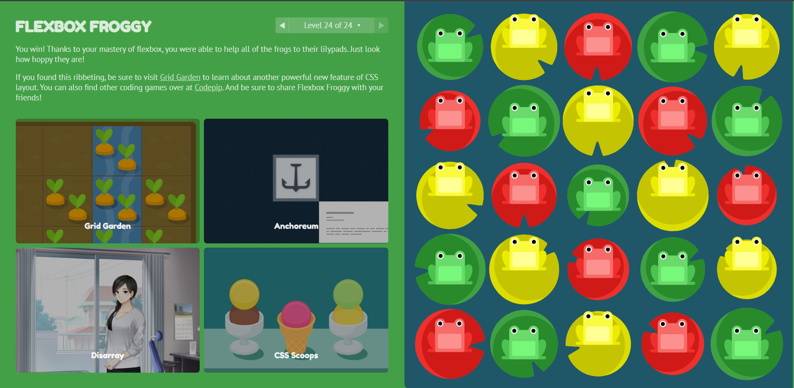

Terminei as 24 fases do jogo flex frog:

order: 1;
Altera a ordem visual dos sapos amarelos para que apareçam depois dos verdes.
align-self: flex-end;
Permite que apenas os elementos com a classe .yellow ignorem o alinhamento global do contentor e desçam para a
parte inferior.

flex-direction: column;
Alinha os itens verticalmente em colunas.
flex-wrap: wrap;
Permite que os itens que não couberem na altura da coluna passem
automaticamente para a coluna seguinte, criando o efeito de múltiplas colunas lado a lado.